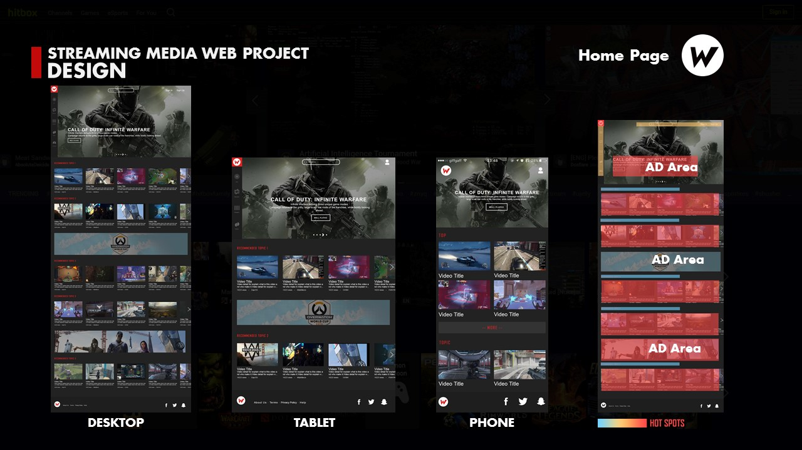
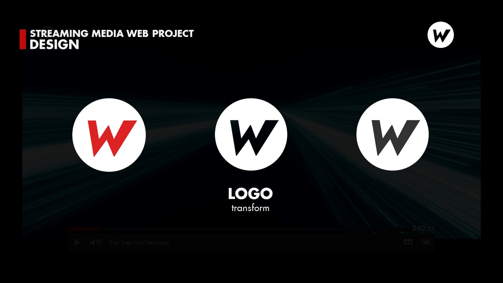
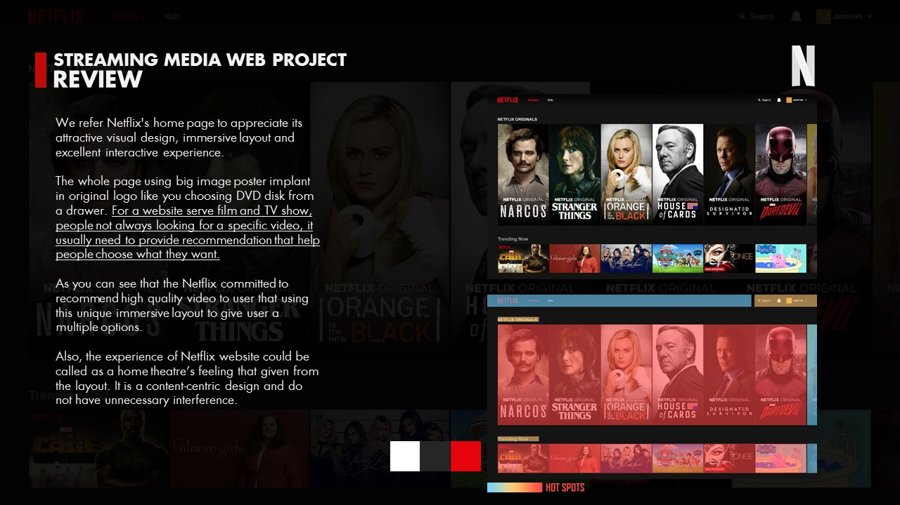

JIANFENG WU
CV
PROFESSIONAL
EXPERIENCE
ABOUT ME
This is a University coursework to design a steaming web product including product design, competing product analysis, UI/UX design and front-end development. The result is a demo product for a streaming video website names “Well Played”.



End of article
2017前端UED设计及样式开发作业 Web Front-end User Experience Design and Development Coursewrok
a University coursework